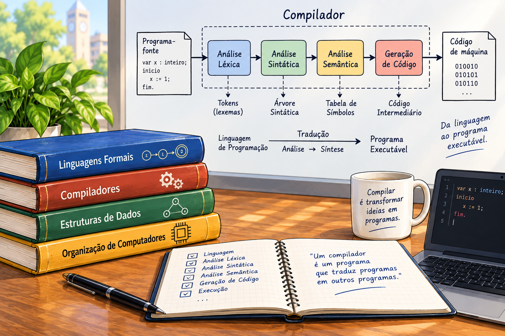
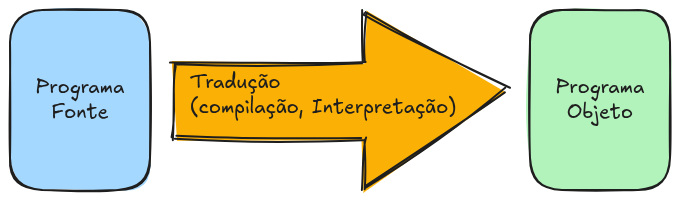
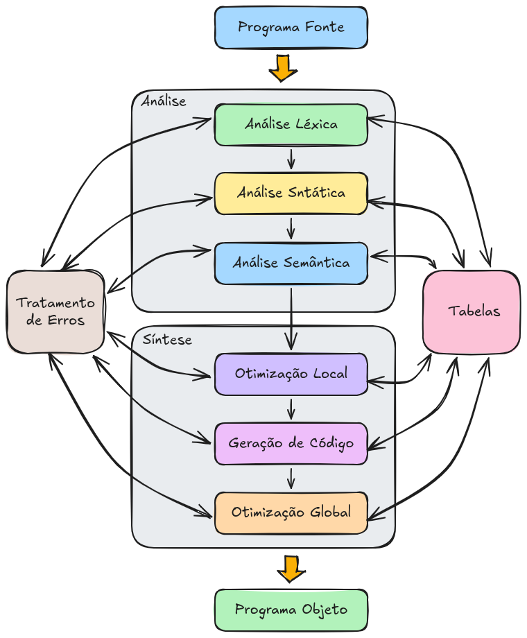
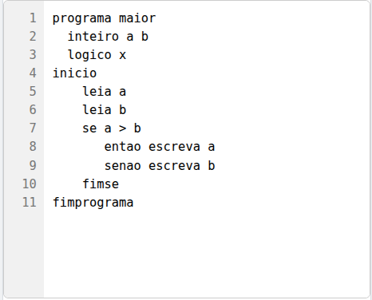
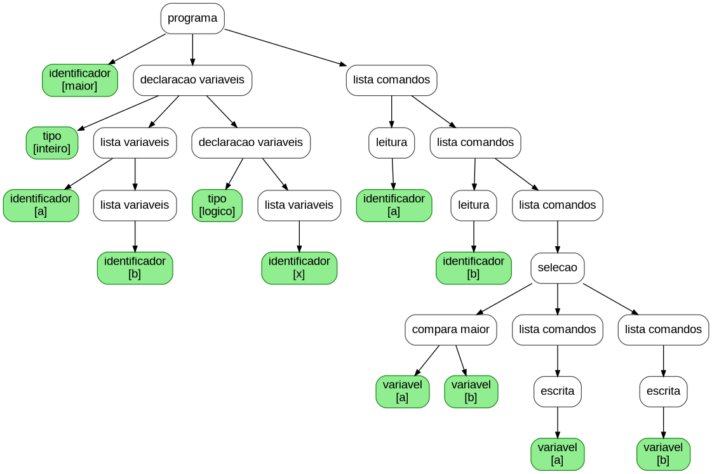

3 Introdução aos Compiladores

3.1 Introdução
Desde o surgimento dos computadores digitais, existe uma preocupação fundamental: como permitir que seres humanos expressem instruções de maneira conveniente e, ao mesmo tempo, como transformar essas instruções em uma forma que possa ser processada por uma máquina? Os computadores são capazes de executar operações em grande velocidade, mas precisam receber instruções em uma representação que possa ser interpretada pelos seus componentes de processamento. A necessidade de estabelecer uma ponte entre a forma de expressão utilizada pelas pessoas e a representação utilizada pelos computadores levou ao desenvolvimento das linguagens de programação e dos sistemas responsáveis por processá-las.
Os primeiros programas eram escritos utilizando diretamente as instruções disponíveis no processador. Essas instruções são representadas por códigos binários ou, em uma forma mais legível, por linguagens de montagem, conhecidas como assembly languages. Em uma linguagem de montagem, as instruções são representadas por mnemônicos que correspondem, de maneira relativamente direta, às instruções da arquitetura do processador. Embora representem uma evolução em relação à programação diretamente em código de máquina, as linguagens de montagem ainda mantêm uma forte dependência da arquitetura do computador.
A necessidade de aumentar a produtividade dos programadores e reduzir a dependência em relação ao hardware levou ao desenvolvimento das linguagens de programação de alto nível. Na década de 1950 surgiram linguagens como FORTRAN e, posteriormente, ALGOL 60. Essas linguagens permitiram que algoritmos fossem descritos de maneira mais próxima da forma utilizada para expressar problemas matemáticos e procedimentos, reduzindo a quantidade de detalhes relacionados diretamente ao funcionamento do processador.
Desde então, centenas de linguagens de programação foram desenvolvidas. Algumas foram projetadas para aplicações científicas e numéricas; outras, para sistemas operacionais, inteligência artificial, processamento de dados, desenvolvimento Web, sistemas embarcados ou computação de alto desempenho. Apesar das diferenças entre elas, todas precisam, de alguma maneira, ter suas instruções transformadas em uma representação que possa ser executada ou processada por um computador.
Essa necessidade deu origem aos programas tradutores. Um tradutor é um programa capaz de receber uma representação de um programa e produzir outra representação equivalente, normalmente preservando o significado computacional do programa original.
De maneira geral, podemos representar esse processo na Figura fig-compiler-process.

O programa recebido pelo tradutor é denominado programa-fonte (source program) e a representação produzida é denominada programa-alvo (target program) ou, em determinados contextos, programa-objeto (object program).
O programa-fonte é escrito em uma linguagem de programação, como C, C++, Java, Rust ou outra linguagem de alto nível. O programa-alvo pode ser código de máquina, código objeto, código intermediário, bytecode ou alguma outra representação adequada ao sistema que realizará a execução.
O desenvolvimento de um programa, portanto, envolve mais do que simplesmente escrever uma sequência de instruções. É necessário que exista um mecanismo capaz de analisar o programa escrito pelo programador, verificar se sua estrutura está de acordo com as regras da linguagem e produzir uma representação que possa ser utilizada posteriormente para execução.
Compiladores
Um compilador é um programa tradutor que recebe um programa escrito em uma linguagem-fonte e produz uma representação em uma linguagem-alvo.
Um exemplo tradicional é um compilador que recebe um programa escrito em C e produz código objeto ou código de máquina para uma determinada arquitetura.
O compilador não precisa necessariamente produzir diretamente código de máquina. Em muitos sistemas, o resultado da compilação é uma representação intermediária que será posteriormente transformada em código de máquina ou executada por uma máquina virtual.
O processo de compilação normalmente envolve diversas etapas. Entre elas estão a análise dos caracteres que formam o programa, a identificação dos elementos da linguagem, a análise da estrutura sintática, a verificação de propriedades semânticas, a geração de uma representação intermediária e a geração ou otimização do código-alvo.
Essas etapas não são necessariamente implementadas como programas independentes. Um compilador pode organizá-las de diferentes maneiras e várias etapas podem ser combinadas em uma mesma passagem pelo programa.
Interpretadores
Outra forma de executar programas escritos em linguagens de alto nível é utilizar um interpretador.
Um interpretador recebe um programa-fonte e executa suas instruções por meio de um processo de análise e execução.
Enquanto em uma compilação tradicional o programa-fonte é traduzido para uma representação-alvo antes de sua execução, em uma interpretação o processamento do programa está diretamente associado à sua execução.
É comum utilizar os termos tradução offline e tradução online para estabelecer uma distinção didática entre essas abordagens. Na tradução offline, o programa é processado antes da execução, e o resultado da tradução pode ser armazenado para ser executado posteriormente. Na interpretação, o processamento necessário para executar o programa ocorre durante a execução.
Essa distinção, entretanto, deve ser entendida como uma simplificação. Sistemas modernos frequentemente combinam técnicas de compilação e interpretação. Uma linguagem pode, por exemplo, ser inicialmente traduzida para um código intermediário e posteriormente interpretada ou compilada dinamicamente para código de máquina.
Compilação e interpretação
As diferenças entre compilação e interpretação podem ser observadas a partir do momento em que ocorre a transformação do programa.
Em uma compilação tradicional, temos uma sequência semelhante a
\[ \text{Fonte} \xrightarrow{\text{compilação}} \text{Alvo} \xrightarrow{\text{execução}} \text{Resultado}. \]
O programa-alvo pode ser armazenado e executado posteriormente sem que seja necessário repetir todo o processo de compilação.
Em uma interpretação, podemos representar o processo como
\[ \text{Fonte} \xrightarrow{\text{interpretação}} \text{Execução}. \]
O interpretador participa diretamente do processo de execução.
Na prática, essas duas estratégias não são mutuamente exclusivas. Máquinas virtuais, linguagens com código intermediário e compiladores Just-In-Time (JIT) utilizam combinações dessas técnicas. Dessa forma, a fronteira entre compilação e interpretação em sistemas modernos é menos rígida do que a representação tradicional pode sugerir.
O ponto fundamental é que programas escritos em linguagens de alto nível precisam ser processados por algum mecanismo capaz de transformar suas construções em operações que possam ser efetivamente executadas.
O programa-fonte
Um programa-fonte é uma sequência de caracteres que segue as regras de uma determinada linguagem de programação. Por exemplo, considere o seguinte programa em uma linguagem semelhante a C:
int soma(int a, int b) {
return a + b;
}Para um programador, esse código apresenta uma estrutura relativamente fácil de compreender. Entretanto, antes que possa ser executado por um processador, é necessário determinar o significado dos elementos que aparecem no programa e transformá-los em uma representação adequada.
O compilador precisa identificar, entre outras coisas, os identificadores soma, a e b, as palavras reservadas int e return, os símbolos (, ), {, }, , e ;, além do operador +.
Também é necessário verificar se esses elementos estão organizados de acordo com a sintaxe da linguagem e se o programa satisfaz determinadas regras semânticas. Somente depois dessas análises será possível produzir uma representação adequada para as etapas seguintes da compilação.
Esse exemplo simples já evidencia uma característica fundamental dos compiladores: o programa-fonte precisa ser analisado em diferentes níveis.
3.2 Aspectos básicos da compilação
A implementação de uma linguagem de programação envolve diferentes questões relacionadas à forma como os programas são escritos, analisados e transformados para que possam ser executados por um computador. De maneira geral, podem ser identificados três aspectos fundamentais: o aspecto sintático, o aspecto semântico e o aspecto pragmático.
O aspecto sintático está relacionado à forma das construções da linguagem. Seu objetivo é determinar se uma determinada sequência de símbolos constitui uma construção válida segundo as regras da linguagem. Assim, a análise sintática permite verificar, por exemplo, se uma expressão, uma atribuição, uma declaração ou um comando de repetição foi escrito de acordo com a gramática da linguagem.
O aspecto semântico está relacionado ao significado das construções sintaticamente válidas. Uma construção pode estar corretamente formada de acordo com a gramática e, ainda assim, não possuir um significado válido no contexto do programa. São exemplos de problemas semânticos a utilização de uma variável que não foi declarada, a incompatibilidade entre tipos em uma atribuição e a utilização inadequada de uma operação em função dos tipos de seus operandos.
O aspecto pragmático está relacionado à integração do processo de tradução com o sistema computacional no qual o programa será executado. Esse aspecto envolve características da máquina hospedeira e da máquina-alvo, do sistema operacional, do formato dos arquivos executáveis, das convenções de chamada de procedimentos e funções, da organização da memória e do conjunto de instruções do processador.
Os aspectos sintático e semântico podem ser estudados de maneira relativamente independente da arquitetura específica do computador. Já os aspectos relacionados à geração e à execução do código apresentam maior dependência da plataforma-alvo. Uma mesma linguagem de programação pode, por exemplo, ser implementada para diferentes arquiteturas, exigindo estratégias distintas para a geração do código executável.
Por essa razão, o estudo dos compiladores pode ser realizado com o auxílio de uma linguagem de programação simplificada. Neste livro, os exemplos serão desenvolvidos com base em uma linguagem denominada Linguagem Simples, cuja tradução será direcionada para uma máquina virtual também simplificada, denominada Máquina Virtual Simples (MVS). Nessa abordagem, os aspectos pragmáticos da linguagem e os detalhes da arquitetura da máquina são deliberadamente reduzidos. Essa simplificação permite concentrar a atenção nos princípios e nas técnicas fundamentais envolvidos na construção de compiladores, sem introduzir, inicialmente, a complexidade característica das linguagens de programação de grande porte e os diversos detalhes presentes em arquiteturas reais de computadores.
3.3 Fases da compilação
O processo de compilação pode ser organizado em um conjunto de fases, cada uma responsável por uma parte específica da transformação do programa fonte. Uma organização tradicional compreende as fases de análise léxica, análise sintática, análise semântica, geração de código intermediário, otimização e geração de código para a máquina-alvo.
A análise léxica é responsável por percorrer o programa fonte e identificar as unidades básicas que o constituem, denominadas tokens. Nessa fase são reconhecidos, por exemplo, identificadores, palavras reservadas, operadores, delimitadores e constantes.
A análise sintática recebe os tokens produzidos pelo analisador léxico e verifica se eles podem ser organizados de acordo com as regras gramaticais da linguagem. Como resultado dessa análise, pode ser construída uma representação da estrutura sintática do programa, frequentemente na forma de uma árvore sintática ou de uma árvore sintática abstrata.
A análise semântica utiliza a estrutura produzida pela análise sintática para verificar propriedades que não podem ser determinadas apenas pela gramática. Entre essas propriedades encontram-se a compatibilidade de tipos, a declaração e o uso de identificadores, as regras de escopo e a consistência das operações realizadas pelo programa.
Após as fases de análise, o compilador pode produzir uma representação intermediária do programa. Essa representação funciona como uma forma de código independente, ou relativamente independente, da arquitetura da máquina-alvo. A utilização de uma representação intermediária facilita a implementação de compiladores para diferentes arquiteturas, pois permite separar as etapas de análise das etapas específicas de geração de código.
A otimização procura transformar a representação do programa de modo a obter uma implementação mais eficiente, preservando seu comportamento. Dependendo da estratégia utilizada, a otimização pode buscar reduzir o espaço ocupado pelo programa ou diminuir seu tempo de execução.
Finalmente, a geração de código transforma a representação intermediária em uma representação adequada à máquina ou plataforma-alvo. O resultado pode ser código de máquina, código objeto, código para uma máquina virtual ou outra representação apropriada ao ambiente de execução.
A Figura fig-fases apresenta uma visão geral dessas fases.

O processo apresentado na Figura fig-fases deve ser entendido como uma organização conceitual. Em um compilador real, algumas dessas fases podem ser combinadas, executadas mais de uma vez ou implementadas de maneira integrada. Além disso, informações produzidas em uma determinada fase podem ser utilizadas por diversas outras fases.
Durante o processo de análise, o compilador pode identificar diferentes categorias de erros. Os erros léxicos estão relacionados a símbolos ou sequências de caracteres que não pertencem ao vocabulário da linguagem. Os erros sintáticos ocorrem quando os tokens não podem ser organizados segundo as regras da gramática. Já os erros semânticos ocorrem quando uma construção sintaticamente válida viola alguma regra de significado da linguagem.
As fases de compilação podem ser organizadas de diferentes maneiras. Em uma compilação em múltiplos passos, cada fase pode produzir uma representação intermediária que será utilizada pela fase seguinte. Essa organização favorece a separação das responsabilidades e pode facilitar a construção e a manutenção do compilador.
Em uma compilação em uma única passagem, por outro lado, as diferentes atividades podem ser combinadas de modo que o programa seja processado e traduzido de maneira mais integrada. Historicamente, essa estratégia foi importante em ambientes nos quais os recursos computacionais eram limitados. Atualmente, a distinção entre compiladores de uma e de várias passagens é menos rígida, pois compiladores modernos utilizam diferentes formas de organização interna e múltiplas representações intermediárias.
Uma estratégia particularmente importante para a implementação de compiladores é a tradução dirigida pela sintaxe. Nesse modelo, as ações responsáveis pelo processamento semântico e pela geração de código são associadas às regras da gramática utilizada pelo analisador sintático. Assim, à medida que uma construção sintática é reconhecida, podem ser executadas ações associadas àquela construção.
As ações semânticas podem, por exemplo, atualizar a tabela de símbolos, realizar verificações de tipos, calcular atributos de uma construção ou produzir instruções para uma representação intermediária. Dessa maneira, a análise sintática passa a desempenhar um papel central na coordenação das demais atividades de tradução.
No projeto de compilador desenvolvido neste curso, será utilizada essa abordagem, com o auxílio das ferramentas flex e bison. Essas ferramentas permitem automatizar parte significativa da construção dos analisadores léxico e sintático, possibilitando concentrar o estudo nos princípios envolvidos na implementação de um compilador.
Construção do analisador léxico
O analisador léxico, também denominado scanner, é responsável pela primeira etapa de análise do programa fonte. Sua função principal é percorrer a sequência de caracteres que constitui o programa e agrupá-los em unidades léxicas significativas para as etapas posteriores da compilação.
Durante a análise, o scanner percorre normalmente o texto da esquerda para a direita, identificando os símbolos que pertencem ao vocabulário da linguagem. Caracteres consecutivos que formam uma unidade léxica são agrupados e classificados de acordo com sua categoria.
Entre as unidades reconhecidas pelo analisador léxico estão as palavras reservadas, os identificadores, os números, os literais, os operadores e os delimitadores. Por exemplo, em uma linguagem semelhante ao Pascal, a sequência
A := B + 10;pode ser dividida em identificadores, operador de atribuição, operador aritmético, constante numérica e delimitador de comando.
Para cada unidade léxica reconhecida, o analisador léxico produz um token. Um token pode ser entendido como uma representação interna da categoria sintática à qual pertence o símbolo reconhecido. Em implementações reais, além do código do token, pode ser necessário armazenar informações adicionais, como o lexema correspondente, seu valor e sua posição no programa fonte.
Durante a análise léxica também são normalmente eliminados elementos que não participam diretamente da estrutura sintática do programa, como espaços em branco, tabulações e comentários. Esses elementos são importantes para a escrita e documentação do programa, mas, em geral, não precisam ser encaminhados ao analisador sintático.
Outra responsabilidade importante do analisador léxico é a identificação de erros. Um erro léxico ocorre quando uma sequência de caracteres não pode ser reconhecida como uma unidade válida da linguagem. Também podem ser verificadas restrições relacionadas ao tamanho de identificadores ou à representação de constantes e literais.
A ferramenta flex automatiza a construção dessa etapa. O programador especifica padrões que descrevem as unidades léxicas, normalmente utilizando expressões regulares, e o flex gera código responsável por reconhecer esses padrões. Dessa forma, o reconhecimento léxico pode ser relacionado diretamente aos conceitos de linguagens regulares e autômatos finitos.
Exemplo de análise léxica
Considere o seguinte programa escrito no subconjunto de Pascal utilizado como exemplo:
program exemplo;
var A, B: byte;
begin
A := B + 0.5;
end.O analisador léxico percorre o programa caractere por caractere e identifica as unidades léxicas que o constituem. O resultado dessa análise pode ser representado por uma sequência de tokens, conforme apresentado na Tabela Tabela tbl-simboloslexicos.
| Item | Lexema | Token | Descrição |
|---|---|---|---|
| 1 | program |
T_PROGRAM | palavra reservada |
| 2 | exemplo |
T_IDENTIF | identificador |
| 3 | ; |
T_PTOVIRG | símbolo ponto e vírgula |
| 4 | var |
T_VAR | palavra reservada |
| 5 | A |
T_IDENTIF | identificador |
| 6 | , |
T_VIRGULA | símbolo vírgula |
| 7 | B |
T_IDENTIF | identificador |
| 8 | : |
T_DOISPTO | símbolo dois pontos |
| 9 | byte |
T_IDENTIF | identificador |
| 10 | ; |
T_PTOVIRG | símbolo ponto e vírgula |
| 11 | begin |
T_BEGIN | palavra reservada |
| 12 | A |
T_IDENTIF | identificador |
| 13 | := |
T_ATRIB | símbolo de atribuição |
| 14 | B |
T_IDENTIF | identificador |
| 15 | + |
T_MAIS | símbolo mais |
| 16 | 0.5 |
T_NUMERO | número |
| 17 | ; |
T_PTOVIRG | símbolo ponto e vírgula |
| 18 | end |
T_END | palavra reservada |
| 19 | . |
T_PTO | símbolo ponto final |
Neste exemplo, os nomes dos tokens escritos em letras maiúsculas e iniciados por T_ representam constantes numéricas que identificam as diferentes categorias de unidades léxicas. Por exemplo, T_PROGRAM = 256 identifica a palavra reservada program, enquanto T_IDENTIF = 257 identifica um identificador. Esses valores são utilizados internamente pelo compilador para distinguir os diferentes tipos de tokens produzidos pelo analisador léxico.
É importante observar que uma unidade léxica pode ser constituída por um único caractere, como uma vírgula (,) ou um ponto (.), ou por uma sequência de caracteres, como ocorre com palavras reservadas, identificadores e operadores, a exemplo do operador de atribuição :=. O analisador léxico é responsável por percorrer o programa-fonte, reconhecer essas unidades léxicas e produzir, para cada uma delas, o token correspondente. Dessa forma, a sequência de tokens gerada pelo analisador léxico constitui a entrada utilizada pelas etapas seguintes do compilador.
É importante distinguir também o lexema do token. O lexema é a sequência concreta de caracteres encontrada no programa fonte, como A, 0.5 ou :=. O token, por sua vez, representa a categoria à qual essa sequência pertence. Assim, os diferentes identificadores encontrados no programa podem produzir o mesmo tipo de token (T_IDENTIF), embora seus lexemas sejam diferentes.
Tabela de símbolos
A tabela de símbolos é uma estrutura de dados fundamental para a implementação de um compilador. Ela armazena informações sobre as entidades nomeadas que aparecem no programa, tais como variáveis, constantes, tipos, procedimentos, funções, parâmetros e outros identificadores.
Quando uma declaração é encontrada, o compilador pode inserir uma nova entrada na tabela de símbolos. Posteriormente, quando o identificador é utilizado, essa estrutura pode ser consultada para recuperar as informações associadas à entidade.
Uma entrada da tabela pode conter diferentes informações, dependendo da linguagem e da fase de compilação. Entre elas podem estar o nome do identificador, seu tipo, escopo, categoria, endereço ou deslocamento na memória, número de parâmetros e outras propriedades relevantes.
Um exemplo simplificado de tabela de símbolos é apresentado na Tabela Tabela tbl-simbolos.
| Nome | Tipo | Endereço |
|---|---|---|
A |
int |
0 |
B |
int |
1 |
A eficiência da tabela de símbolos é importante porque ela pode ser consultada diversas vezes durante a compilação. Uma estrutura frequentemente utilizada para esse propósito é a tabela hash, que permite, em condições adequadas, realizar operações de inserção e consulta de maneira eficiente.
A tabela de símbolos também precisa considerar as regras de escopo da linguagem. Em linguagens que permitem blocos aninhados, por exemplo, diferentes identificadores com o mesmo nome podem existir em escopos distintos. Nesse caso, a tabela deve permitir determinar qual declaração é válida em cada ponto do programa.
Análise sintática
A análise sintática é realizada pelo analisador sintático, também denominado parser. Sua função é receber a sequência de tokens produzida pelo analisador léxico e verificar se essa sequência está de acordo com a gramática da linguagem.
Enquanto o analisador léxico trabalha principalmente com sequências de caracteres e unidades léxicas, o analisador sintático trabalha com a organização dessas unidades. Seu objetivo é determinar como os tokens podem ser agrupados para formar construções como expressões, comandos, declarações, blocos e programas completos.
A estrutura sintática reconhecida pelo parser pode ser representada por uma árvore. A árvore sintática representa a aplicação das regras da gramática e explicita a organização hierárquica da construção reconhecida.
De forma simplificada, um programa está sintaticamente correto quando a sequência de tokens pode ser derivada a partir do símbolo inicial da gramática. Em uma gramática não ambígua, espera-se que a construção possua uma única estrutura sintática válida.
Considere, por exemplo, o programa em linguagem Simples (que será descrita formalmente no capítulo sec-analise-sintatica), representado na Figura fig-program.

A estrutura hierárquica correspondente pode ser representada por uma árvore sintática, como ilustrado na Figura fig-syntaxtree.

A árvore permite visualizar a relação entre as diferentes construções do programa. A raiz representa o programa como um todo, enquanto os nós internos representam construções sintáticas e as folhas correspondem, em uma representação concreta, aos elementos terminais da linguagem.
Em implementações modernas, é comum utilizar uma árvore sintática abstrata (Abstract Syntax Tree – AST), que elimina detalhes sintáticos que não são necessários às etapas posteriores. A AST fornece uma representação mais compacta e adequada para a análise semântica, otimização e geração de código.
O exemplo interativo a seguir, demonstra o processo de construção da árvore sintática para um programa. Para o programa fonte digitado, após clicar no botão ‘Construir Árvore’, são gerados e calculados os tokens e os nós da árvore sintática. As folhas da árvore estão relacionadas as informações do código.
A ferramenta bison será utilizada neste curso para auxiliar na construção do analisador sintático. A partir da especificação de uma gramática livre de contexto e das ações associadas às suas produções, o bison gera o código necessário para realizar o processo de análise sintática.
Análise semântica
A análise semântica é a fase na qual o compilador verifica propriedades relacionadas ao significado das construções sintáticas reconhecidas. Uma construção pode estar sintaticamente correta e, mesmo assim, apresentar um erro semântico.
Considere, por exemplo, uma atribuição:
A := B + C;A construção pode estar corretamente formada segundo a gramática da linguagem. Entretanto, para determinar se ela é válida, é necessário conhecer os tipos de A, B e C, bem como as regras de compatibilidade de tipos da linguagem.
Entre as verificações realizadas durante a análise semântica encontram-se:
Compatibilidade de tipos. Verifica se os tipos envolvidos em operações e atribuições são compatíveis com as regras da linguagem.
Declaração e uso de identificadores. Verifica se variáveis, constantes, funções, procedimentos e outros identificadores utilizados no programa foram devidamente declarados.
Regras de escopo e visibilidade. Determina qual declaração de um identificador deve ser utilizada em cada ponto do programa, respeitando as regras de escopo da linguagem.
Compatibilidade entre declarações e usos. Verifica se uma entidade está sendo utilizada de acordo com sua categoria e declaração. Por exemplo, uma variável declarada como vetor não deve ser utilizada como se fosse um registro.
Referências a entidades. Verifica se referências presentes no programa correspondem a entidades válidas. Por exemplo, um identificador utilizado em uma expressão deve corresponder a uma declaração acessível naquele contexto.
A análise semântica normalmente utiliza informações armazenadas na tabela de símbolos. Dessa forma, as fases léxica, sintática e semântica não são completamente independentes. O analisador léxico identifica os nomes, o analisador sintático determina a estrutura na qual esses nomes aparecem e o analisador semântico verifica se seu uso é consistente com as regras da linguagem.
Tratamento de erros
Um compilador deve ser capaz não apenas de reconhecer programas válidos, mas também de detectar e comunicar adequadamente os erros encontrados durante a compilação. Essa característica é especialmente importante em ambientes de desenvolvimento, nos quais o usuário espera receber informações que auxiliem na correção do programa.
Os erros podem ser classificados de acordo com a fase em que são identificados. Um caractere inválido pode produzir um erro léxico; uma sequência incorreta de tokens pode produzir um erro sintático; e uma operação envolvendo tipos incompatíveis pode produzir um erro semântico.
Quando um erro é identificado, o módulo de tratamento de erros deve produzir uma mensagem que permita compreender sua causa e, quando possível, sua localização no programa fonte. Informações como número da linha, posição aproximada e descrição do problema são particularmente úteis.
Após identificar um erro, existem duas estratégias gerais. A primeira é interromper o processo de compilação, estratégia conhecida como modo de pânico. É uma abordagem simples e adequada quando a continuação da análise não é segura ou quando não se deseja realizar recuperação de erros.
A segunda estratégia consiste em tentar recuperar-se do erro, permitindo que a análise continue. Nesse caso, o compilador procura determinar um ponto a partir do qual possa continuar o processamento sem comprometer completamente a análise das construções seguintes.
A recuperação de erros é importante porque permite identificar vários problemas em uma única execução do compilador. Em vez de corrigir um erro, recompilar o programa e somente então descobrir o próximo, o programador pode receber um conjunto de mensagens referentes a diferentes problemas encontrados no código.
Geração de código intermediário
Entre a análise do programa fonte e a geração do código para a máquina-alvo, o compilador pode utilizar uma representação intermediária. Essa representação facilita a separação entre as características da linguagem fonte e as características da plataforma de execução.
Uma representação intermediária deve ser suficientemente expressiva para representar as construções da linguagem, mas, ao mesmo tempo, suficientemente simples para permitir sua análise e transformação. Existem diversas formas de representação intermediária, como árvores, grafos e representações baseadas em instruções de três endereços.
Uma representação simples para expressões aritméticas é a utilização de quádruplas. Considere a atribuição:
A := (B + C) * (D + E);Uma possível representação por quádruplas é:
| Operador | Argumento 1 | Argumento 2 | Resultado |
|---|---|---|---|
+ |
B |
C |
T1 |
+ |
D |
E |
T2 |
* |
T1 |
T2 |
A |
As variáveis temporárias T1 e T2 representam resultados intermediários. A primeira quádrupla calcula B + C; a segunda calcula D + E; e a terceira multiplica os dois resultados e armazena o valor em A.
A representação intermediária facilita a realização de otimizações, pois permite analisar as operações do programa sem depender diretamente das instruções específicas do processador. Posteriormente, essa representação pode ser convertida para o código da máquina-alvo.
Otimização de código
A otimização de código consiste na aplicação de transformações que procuram melhorar as características do programa gerado, sem alterar seu comportamento observável. Entre os objetivos mais comuns estão a redução do tempo de execução e a redução da quantidade de memória necessária.
Uma otimização importante é a eliminação de subexpressões comuns. Considere, por exemplo:
C := (A + B) * (A + B);A expressão A + B aparece duas vezes, mas seu valor pode ser calculado uma única vez e reutilizado:
T1 := A + B
C := T1 * T1Essa transformação evita a realização de uma operação que produziria novamente um valor já conhecido.
Outra possibilidade é a eliminação de saltos desnecessários. Durante a tradução de estruturas condicionais e de repetição, podem ser produzidas sequências de instruções de desvio que não são necessárias. A otimização pode simplificar essas sequências, reduzindo o número de instruções executadas.
Também é possível realizar a movimentação de código invariante de laço. Uma expressão ou atribuição que produz sempre o mesmo resultado em todas as iterações de uma repetição pode, em determinadas condições, ser executada antes do início do laço.
Considere:
i := 1;
repeat
J := X;
i := i + 1;
until i >= 100;Se a expressão J := X não depender de valores modificados durante a repetição e não possuir efeitos colaterais que impeçam a transformação, ela poderá ser deslocada para antes do laço:
J := X;
i := 1;
repeat
i := i + 1;
until i >= 100;Essa transformação elimina a repetição desnecessária da atribuição.
As otimizações podem ser realizadas em diferentes níveis. Algumas dependem apenas da estrutura lógica do programa e podem ser realizadas independentemente do processador. Outras dependem das características da arquitetura da máquina-alvo e, portanto, são realizadas em uma etapa mais próxima da geração do código final.
Otimização local
A otimização local considera características específicas do código produzido para uma determinada arquitetura. Nesse nível, o compilador pode utilizar informações sobre o conjunto de instruções, os registradores disponíveis, os modos de endereçamento e outras características do processador-alvo.
Por exemplo, uma sequência de operações da representação intermediária pode ser substituída por uma instrução específica do processador que realize a mesma tarefa com menor número de instruções.
A otimização local é, portanto, fortemente dependente da arquitetura para a qual o código está sendo gerado. Essa característica estabelece uma separação importante entre as otimizações independentes da máquina e aquelas que exploram características específicas do ambiente de execução.
Geração de código objeto
A geração de código é a etapa responsável por transformar a representação intermediária em uma representação adequada à máquina-alvo. O gerador de código precisa escolher instruções e formas de representação que implementem corretamente as operações identificadas nas fases anteriores.
Entre suas responsabilidades estão a seleção de instruções, a utilização dos registradores, o cálculo de endereços e a organização das operações de acordo com as características da arquitetura-alvo.
O resultado dessa etapa pode ser um arquivo contendo código objeto, código de máquina ou outra forma de representação que será posteriormente utilizada pelo sistema de execução. Em muitos ambientes, o código produzido pelo compilador ainda precisa passar por etapas adicionais, como a ligação com bibliotecas e outros módulos, antes que seja obtido um programa executável.
Essa organização permite separar os problemas relacionados ao reconhecimento e à compreensão do programa daqueles relacionados à sua implementação em uma determinada plataforma. Ao longo deste livro, essas etapas serão estudadas individualmente, com ênfase na construção dos analisadores léxico e sintático e na utilização das ferramentas flex e bison.
3.4 Ferramentas para construção do compilador
A construção manual de todas as etapas de um compilador é uma tarefa extensa. Por isso, ferramentas especializadas podem ser utilizadas para automatizar partes do processo.
Neste curso, o flex será utilizado para a construção do analisador léxico. A especificação fornecida ao flex descreve padrões que correspondem às unidades léxicas da linguagem. Esses padrões são normalmente expressos por meio de expressões regulares. A partir deles, a ferramenta gera código para reconhecer as sequências de caracteres correspondentes.
O funcionamento do flex pode ser compreendido a partir do conceito de autômatos finitos. Os padrões especificados pelo programador são convertidos em uma estrutura capaz de reconhecer as cadeias pertencentes às linguagens regulares correspondentes. O código gerado realiza, então, a varredura do programa fonte e produz os tokens que serão utilizados pelo analisador sintático.
Para a construção do analisador sintático será utilizado o bison. Nele, o programador especifica a gramática da linguagem por meio de produções e pode associar ações semânticas às regras. A ferramenta gera o código necessário para realizar o processo de análise sintática.
O analisador gerado pelo bison utiliza uma estratégia de análise baseada em uma pilha e em uma tabela de decisões. Assim, a construção do analisador pode ser relacionada aos conceitos de gramáticas livres de contexto e autômatos com pilha.
A combinação dessas duas ferramentas estabelece uma arquitetura na qual o flex é responsável pelo reconhecimento das unidades léxicas e o bison pela análise da organização dessas unidades segundo a gramática da linguagem. O resultado é uma cadeia de processamento na qual o analisador léxico fornece os tokens ao analisador sintático, que, por sua vez, coordena as ações necessárias para a construção e o processamento das estruturas do programa.